<link href="https://maxcdn.bootstrapcdn.com/bootstrap/3.3.6/css/bootstrap.min.css" rel="stylesheet">
<link rel="stylesheet" href="footer.css">

<script src="https://ajax.googleapis.com/ajax/libs/jquery/1.12.4/jquery.min.js"></script>
<script src="https://maxcdn.bootstrapcdn.com/bootstrap/3.3.6/js/bootstrap.min.js"></script>


<footer class="ct-footer">
                <div class="container">
                    <form name="contentForm" enctype="multipart/form-data" method="post" action="">
                        <div class="ct-footer-pre text-center-lg">
                                <div class="form-group">
                                    <style>
                                        .form-group p{
                                            text-align: right;
                                        }
                                        .form-group h2{
                                            text-align: right;
                                        }
                                    </style>
                                    <h2>
                                       ....קצת עלינו
                                    </h2>
                                    <p>
                                        קצת עלינו תכנית העמיתים באה להקנות לתלמידים ידע על מהות תופעת השימוש בחומרים פסיכו-אקטיביים, מורכבותה והשפעותיה ולסייע להם בגיבוש תפיסת עולם הכוללת חופש ואוטונומיה ואינה מותנית בכך. בבית ספרנו, אנו רואים בעמיתים קבוצה של מנהיגים צעירים, קבוצת השפעה בקרב קבוצת השווים שתסייע בהעברת התכנית לצד הצוות החינוכי. תכנית העמיתים שזורה בתכנית הבית ספרית כחלק מהתכנית לכישורי חיים, מניעת שימוש לרעה, מתן כישורי חיים להתמודדות עם מצבי חיים שונים, כמו עמידה מול לחץ חברתי ועוד. כמו כן, לעמיתים חשיבות בפיתוח אחריות חברתית ומיומנויות של "שומרי סף" בקרב הצעירים.
                                    </p>
                                </div>
                        </div>
                    </form>
                    <div class="ct-footer-meta text-center-sm">
                        <div class="row">
                            <div class="col-sm-6 col-md-2">
                                
                            </div>
                            <div class="col-sm-6 col-md-3">
                                <address>
                                    <span>בית הספר מקיף יג<br></span>שלמה הלוי 9<br>
                                    ראשון לציון<br>
                                    <span>טלפון: 03-6327778</a></span>
                                </address>
                            </div>

                            <div class="col-sm-6 col-md-3">
                                <ul class="ct-socials list-unstyled list-inline">
                                    <li>
                                        <a href="https://www.facebook.com/makifyg" target="_blank"></a>
                                    </li>
                                    <li>
                                        <a href="https://instagram.com/makifyg_school?utm_medium=copy_link" target="_blank"></a>
                                    </li>
                                </ul>
                            </div>
                        </div>
                    </div>
                </div>
                <div class="ct-footer-post">
                    <div class="container">
                        <div class="inner-left">
                        </div>
                        <div class="inner-right">
                            <p>
                                Copyright © 2022 Dontsmoke.&nbsp;<a href=""></a>
                            </p>
                            <p>
                                <a class="ct-u-motive-color" href="" target="_blank"></a><p target="_blank">נוצר על ידי קבוצת העמיתים מבית הספר מקיף י"ג</p>
                            </p>
                        </div>
                    </div>
                </div>
            </footer>
